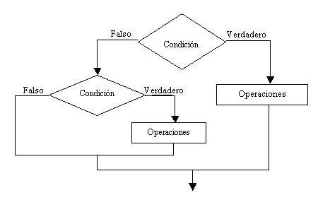
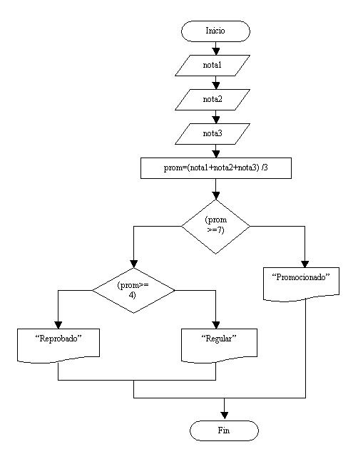
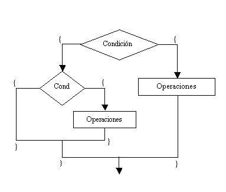

- Estructuras condicionales anidadas |
Decimos que una estructura condicional es anidada cuando por la rama del verdadero o el falso de una estructura condicional hay otra estructura condicional.

El diagrama de flujo que se presenta contiene dos estructuras condicionales. La principal se trata de una estructura condicional compuesta y la segunda es una estructura condicional simple y está contenida por la rama del falso de la primer estructura.
Es común que se presenten estructuras condicionales anidadas aún más complejas.
Confeccionar un programa que pida por teclado tres notas de un alumno, calcule el promedio e imprima alguno de estos mensajes:
Si el promedio es >=7 mostrar "Promocionado".
Si el promedio es >=4 y <7 mostrar "Regular".
Si el promedio es <4 mostrar "Reprobado".

Analicemos el siguiente diagrama. Se ingresan tres valores por teclado que representan las notas de un alumno, se obtiene el promedio sumando los tres valores y dividiendo por 3 dicho resultado (Tener en cuenta que si el resultado es un valor real solo se almacena la parte entera).
Primeramente preguntamos si el promedio es superior o igual a 7, en caso afirmativo va por la rama del verdadero de la estructura condicional mostramos un mensaje que indica "Promocionado" (con comillas indicamos un texto que debe imprimirse en pantalla).
En caso que la condición nos de falso, por la rama del falso aparece otra estructura condicional, porque todavía debemos averiguar si el promedio del alumno es superior o igual a cuatro o inferior a cuatro.
Estamos en presencia de dos estructuras condicionales compuestas.
import java.util.Scanner;
public class EstructuraCondicionalAnidada1 {
public static void main(String[] ar) {
Scanner teclado=new Scanner(System.in);
int nota1,nota2,nota3;
System.out.print("Ingrese primer nota:");
nota1=teclado.nextInt();
System.out.print("Ingrese segunda nota:");
nota2=teclado.nextInt();
System.out.print("Ingrese tercer nota:");
nota3=teclado.nextInt();
int promedio=(nota1 + nota2 + nota3) / 3;
if (promedio>=7) {
System.out.print("Promocionado");
} else {
if (promedio>=4) {
System.out.print("Regular");
} else {
System.out.print("Reprobado");
}
}
}
}
Codifiquemos y ejecutemos este programa. Al correr el programa deberá solicitar por teclado la carga de tres notas y mostrarnos un mensaje según el promedio de las mismas.
Podemos definir un conjunto de variables del mismo tipo en una misma línea:
int nota1,nota2,nota3;
Esto no es obligatorio pero a veces, por estar relacionadas, conviene.
A la codificación del if anidado podemos observarla por el else del primer if.
Para no tener problemas (olvidarnos) con las llaves de apertura y cerrado podemos ver la siguiente regla:
Cada vértice representa una llave de apertura y una de cierre:

Nivel máximo: Porcentaje>=90%. Nivel medio: Porcentaje>=75% y <90%. Nivel regular: Porcentaje>=50% y <75%. Fuera de nivel: Porcentaje<50%.
import java.util.Scanner;
public class EstructuraCondicionalAnidada2 {
public static void main(String[] ar) {
Scanner teclado=new Scanner(System.in);
int num1,num2,num3;
System.out.print("Ingrese primer valor:");
num1=teclado.nextInt();
System.out.print("Ingrese segunda valor:");
num2=teclado.nextInt();
System.out.print("Ingrese tercer valor:");
num3=teclado.nextInt();
if (num1>num2) {
if (num1>num3) {
System.out.print(num1);
} else {
System.out.println(num3);
}
} else {
if (num2>num3) {
System.out.print(num2);
} else {
System.out.print(num3);
}
}
}
}
import java.util.Scanner;
public class EstructuraCondicionalAnidada3 {
public static void main(String[] ar) {
Scanner teclado=new Scanner(System.in);
int num;
System.out.print("Ingrese un valor:");
num=teclado.nextInt();
if (num==0) {
System.out.print("Se ingresó el cero");
} else {
if (num>0) {
System.out.print("Se ingresó un valor positivo");
} else {
System.out.print("Se ingresó un valor negativo");
}
}
}
}
import java.util.Scanner;
public class EstructuraCondicionalAnidada4 {
public static void main(String[] ar) {
Scanner teclado=new Scanner(System.in);
int num;
System.out.print("Ingrese un valor de hasta tres dígitos positivo:");
num=teclado.nextInt();
if (num<10) {
System.out.print("Tiene un dígito");
}
else {
if (num<100) {
System.out.print("Tiene dos dígitos");
} else {
if (num<1000) {
System.out.print("Tiene tres dígitos");
} else {
System.out.print("Error en la entrada de datos.");
}
}
}
}
}
import java.util.Scanner;
public class EstructuraCondicionalAnidada5 {
public static void main(String[] ar) {
Scanner teclado=new Scanner(System.in);
int totalPreguntas,totalCorrectas;
System.out.print("Ingrese la cantidad total de preguntas del examen:");
totalPreguntas=teclado.nextInt();
System.out.print("Ingrese la cantidad total de preguntas contestadas correctamente:");
totalCorrectas=teclado.nextInt();
int porcentaje=totalCorrectas * 100 / totalPreguntas;
if (porcentaje>=90) {
System.out.print("Nivel máximo");
} else {
if (porcentaje>=75) {
System.out.print("Nivel medio");
} else {
if (porcentaje>=50) {
System.out.print("Nivel regular");
} else {
System.out.print("Fuera de nivel");
}
}
}
}
}